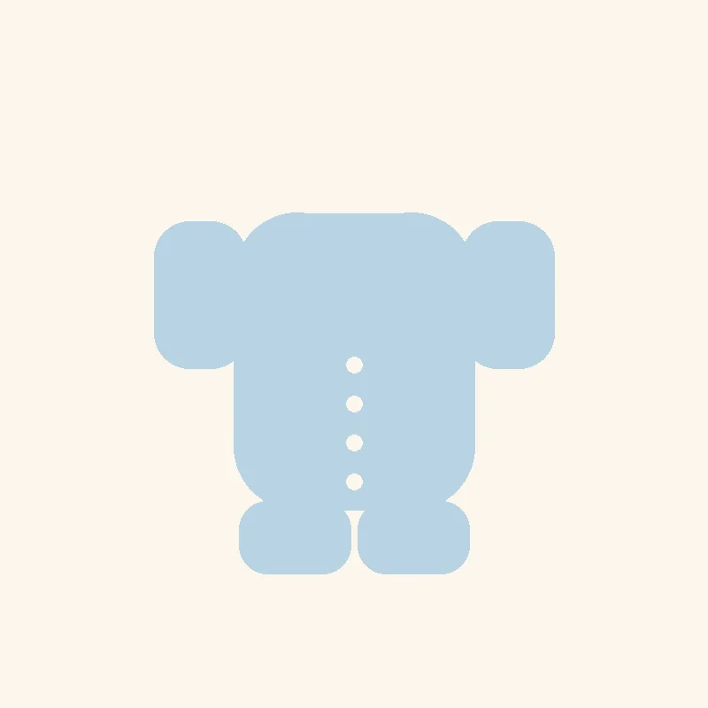

طراحیشده مخصوص روزهای اول تولد؛ زیردکمههای سرتاسری که پوشاندن و تعویض لباس نوزاد بسیار کوچک و شکننده را بدون کشوقوس اضافه ممکن میکند.
این بادی مخصوص هفتههای اول تولد طراحی شده، زمانی که هر حرکت اضافه برای پوشاندن لباس میتواند برای نوزاد و والدین استرسزا باشد. زیردکمههای سرتاسری از یقه تا پایین بادی امکان بازکردن کامل و قرار دادن نوزاد داخل لباس را بدون بالا کشیدن از سر فراهم میکند.
دستکشهای تاشوی انتهای آستین (که بهصورت لبهی تاخورده در طراحی گنجانده شدهاند) از خراش صورت نوزاد با ناخنهای تازهرشد جلوگیری میکنند، بدون اینکه نیاز به دستکش جداگانه باشد.
از آنجا که نوزادان تازهمتولد در هفتههای اول بهسرعت رشد میکنند، پیشنهاد میکنیم بهجای خرید تعداد زیاد در یک سایز، از دو سایز نوزادی و ۱ بهصورت همزمان استفاده کنید. این بادی بخشی از مجموعهی نی نی نی رو ویژهی نوزادان تازهمتولد است.